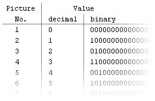
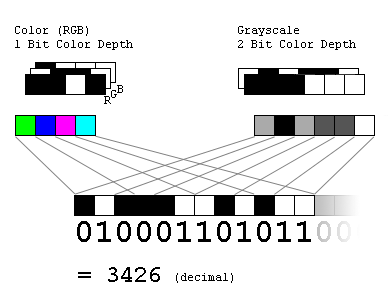
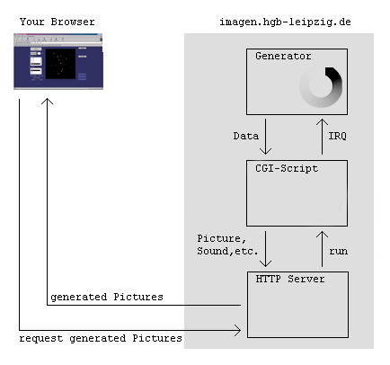

The generator is a very small program. It holds an array of 65536 bits, which is first of all, interpreted as a number. At the beginning this array has been initialised with the value zero. The generator performs only one operation to this array; it always adds the value one to it. This causes the array to pass through every possible combination of bits - the number passes through every value it can hold. But bits cannot only be interpreted as a number but also as a picture (or a sound and so on). So every possible picture will be generated too. By using this interface you have access to these pictures.I wrote the generator in the programming language C. The array consists of 4096 16-bit (unsigned) integers, which are handled recursively. I optimised the program as much as I could and by using the pgcc I got the version that is running now. It needs 5-6 clockcycles for each new combination. That means that on the used machine it generates about 24 million pictures per second. This may sound very fast but it is nothing compared to the number of combinations that 65536 bits have. The time until each and every variant will be generated is unimaginable - and finite.

The interface mainly consists of the java applet ("ImagenApplet.class") on the main page. It allows you to select a picturesize ("resolution"), a colormode and a colordepth. Most of the chooseable variants have a data amount that is lower than 65536 bit. But so it is possible to explore the different interpretations of bits and to see the structures that form out of nothing, caused by a simple linear operation. For completeness it is possible to see the numeral values in hexadecimal or decimal number format. And in the ASCII format, this should produce every combination of characters and numbers. Every time the applet needs a new data set, a cgi script on the server is called. It interrupts the generator and causes it to save the actual data. These data are given to a converter that produces raw bytes which are given either to Netpbm for making a picture out of it or to Sox for a sound. The calculator function is using an html form and brings the image to the server by using the http put method. As answer your browser receives a second java applet ("ImagenCalculator.class"), which is loading your image from the server back to your computer for calculation. This may sound stupid because there are two transfers without any need. But this is the only way to let the applet get the image. Applets aren't allowed to load files from your local harddisc. There are other possibilities but these are very unwieldy for the user. The applet calculates the time on your computer because every action on the server slows the generator down. The applet may take some time for the calculation so please be patient and wait until the applet displays something.

I want to thank
Maeda Mameo - for the delaunay triangulation code
Nico Törl - for help on the configuration of the operating system and the web server
Dr. Michael Ohme - for the hints for the mixing algorithms
Some members of the LUG Leipzig and de.comm.infosystems.www.servers for helping me on various programming and configuration problems I had.
This system is running on a PC with a Pentium processor at 120MHz with 32 MBytes RAM. The operating system is Linux with an Apache web server. If you like this project and want to donate a faster machine then please send me an email: imagen@gmx.de.
Leander Seige, July 2000